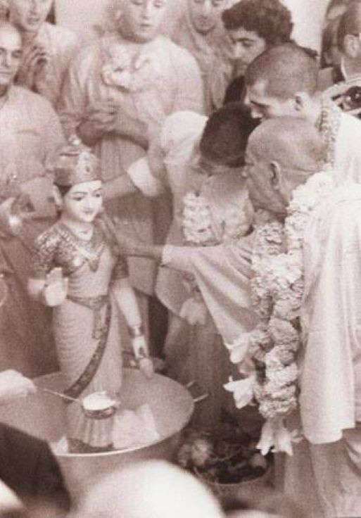

Srila Prabhupada's Love And Care For Srimati Radha Rani.
Posted on : 11th September, 2024

Indradyumna Swami : Prabhupada visited France several times. On August 10, 1973, he installed Radha-Parisisvara in a simple ceremony. I was standing next to the Vyasasana. As the devotees bathed Srimati Radharani, Prabhupada thought that the marble on Her cheek had become discolored from the abhishek. Prabhupada got off his Vyasasana and with so much concern and care and love, he walked towards the Deity of Radharani. He got up close to Her, folded his hands and then carefully rubbed Her face. Prabhupada thought, what was on Her face could be removed, but it was in the marble. I thought, "Prabhupada doesn't see the Deity as marble. He's actually seeing that Radharani is there and he's treating Her with so much love and devotion." That one incident convinced me about Deity worship.
~ Memories Anecdotes of modern days saint vol. 3 by siddhanta dasa